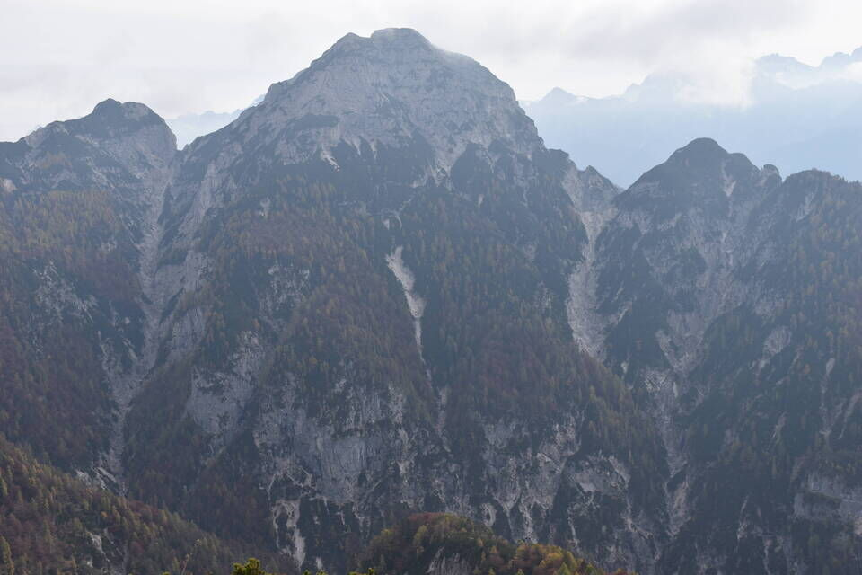

Gita molto breve ma pittoresca. Il Cerchio è un monte assai caruccio: d'altronde viene consigliato da Armellini nel libro dei Trois Neris, che è sempre una garanzia.
Guardando il monte l'oronimo è inspiegabile, ma qui ci viene in soccorso Rino Gaberscik: «M. Cerchio è la traduzione del tedesco Zirkel Spitze che è dal tedesco Spitze e Zirkel: Punta del circolo, del cerchio, e si riferisce alla conca della Busate o Circo o Cerchio, alla base SO del monte, dalla quale la cima e la pressoché scomparsa malga Cerchio hanno preso il nome».
Un monte il cui avvenire è già in atto: giù tutto, a pezzi, sbriciolato. Per una volta i monti ci sono familiari: non eterni ma precari e perituri come noi.
Le cime del Bruca: solo sulla Sud salgono gli escursionisti.
Fin prima del terremoto c'era un ardito campanile battezzato «Vescovo di Brückenk» dal Tivinella che lo salì per primo (e vi salì pure in seguito Ernesto Lomasti).
L'arditissimo Campanile del Cerchio: pure questo s'è sfasciato.
Anche qui come sul Cerchio vi salì il pontebbano Ernesto Lomasti (vedi qui).
Verso lo Scinàuz e il M. Torre: questo versante è del massimo interesse, perché esistono (o esistevano) sentieri che dall'alto Rio degli Uccelli salgono per quelle pale boscose. Così come è intrigante il passaggio dal M. Torre all'omonima forcella.
L'altipiano di malga Cerchio: troppo bello, non l'avevo mai visto.
Il percorso che si segue per salire in cima è affascinante dato che si gira attorno al monte. Ma non mi dispiacerebbe trovare un percorso più diretto guardando in faccia la montagna. Ad esempio risalendo il Rio degli Uccelli.
Agghiacciante.